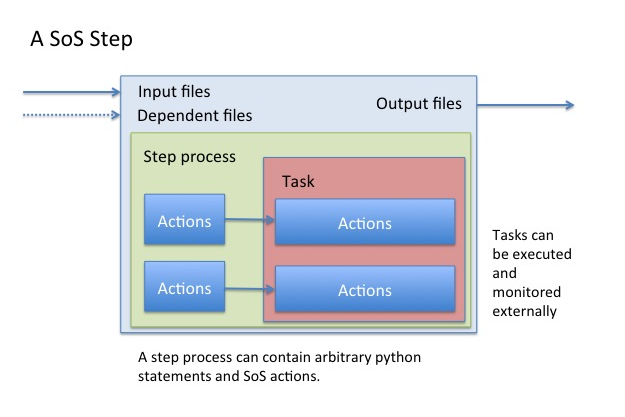
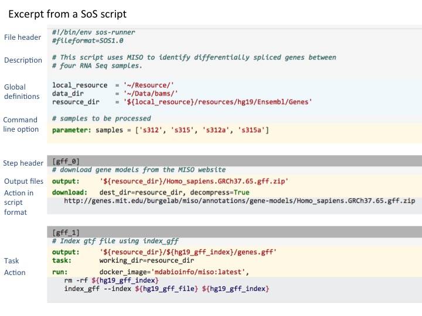

Overview of SoS concepts¶
A SoS script defines one or more workflows, and each workflow consists of one or more steps.

Although the input and output can be more general, each step typically has its input, output, and dependents files, it executes a step process that consists of one or more Python statements and SoS actions (special python functions). Part or all the step process, called tasks, can be executed and monitored externally.

A SoS script contains comments, statements, and one or more SoS steps. A SoS step consists of a header with one or more step names and optional options. The body of a SoS step consists of optional comments, statements, input, output, depends files, parameter definitions, followed by step process. The following figure shows a sample script that defines a workflow with two steps:

Formal definitions of terminology & grammar¶
- Script: A SoS script that defines one or more workflows.
- Workflow: A sequence of processes that can be executed to complete certain task.
- Step: A step of a workflow that perform one piece of the workflow.
- Target: Objects that are input and result of a SoS step, which are usually files, but can also be objects such as an executable command (with variable locations), and a SoS variable.
- Step options: Options of the step that assist the definition of the workflow.
- Step input: Specifies the input files of the step.
- Step output: Specifies the output files and targets of the step.
- Step dependencies: Specifies the files and targets that are required by the step.
- Step process: The process that a step executes to complete specified work, specified as one or more Python statements.
- Task: Part or all step process that will be executed and monitored outside of SoS. These are usually resource intensive jobs that will take long time to complete.
- Action: SoS or user-defined Python functions. They differ from regular Python functions in that they may behave differently in different running mode of SoS (e.g. ignore when executed in dryrun mode).
More formally defined, the SoS syntax obeys the following grammar, given in extended Backus-Naur form (EBNF):
Script = {comment}, {statement}, {step};
comment = "#", text, NEWLINE
assignment = name, "=", expression, NEWLINE
with SoS steps defined as
step = step_header,
{comment}, {{statement}, [input | output | depends ]},
[process, NEWLINE, {script} ]
step_header = "[", section_names, [":", names | options], "]", NEWLINE
parameter = "parameter", ":", assignment
input = "input", ":", [expressions], [",", options], NEWLINE
output = "output", ":", [expressions], [",", options], NEWLINE
depends = "depends", ":", [expressions], [",", options], NEWLINE
task = "task", ":", [options]
action = func_format | script_format
func_format = name, "(", [options], ")"
script_format = name, ":", [options], NEWLINE, script
section_names = section_name, ",", section_name
section_name = name, "(", text, ")"
names = name, {",", name}
workflow = name, ['_', steps], {"+", name, ['_', steps}
assignment = name, "=", expression, NEWLINW
expressions = expression, {",", expression}
options = option, {"," option}
option = name, "=", expression
Here name, expression and statement are arbitrary Python names, expression and statements with added SoS features. SoS requires Python 3 and does not support Python 2.x specific syntax
This documentation is a comprehensive reference to all SoS features. Please refer to this SoS quick start tutorial to learn some basics of SoS before diving into the details.